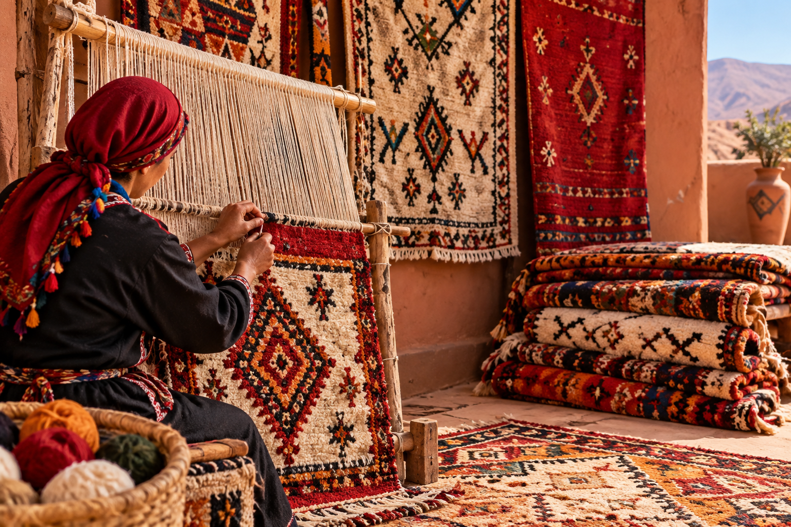
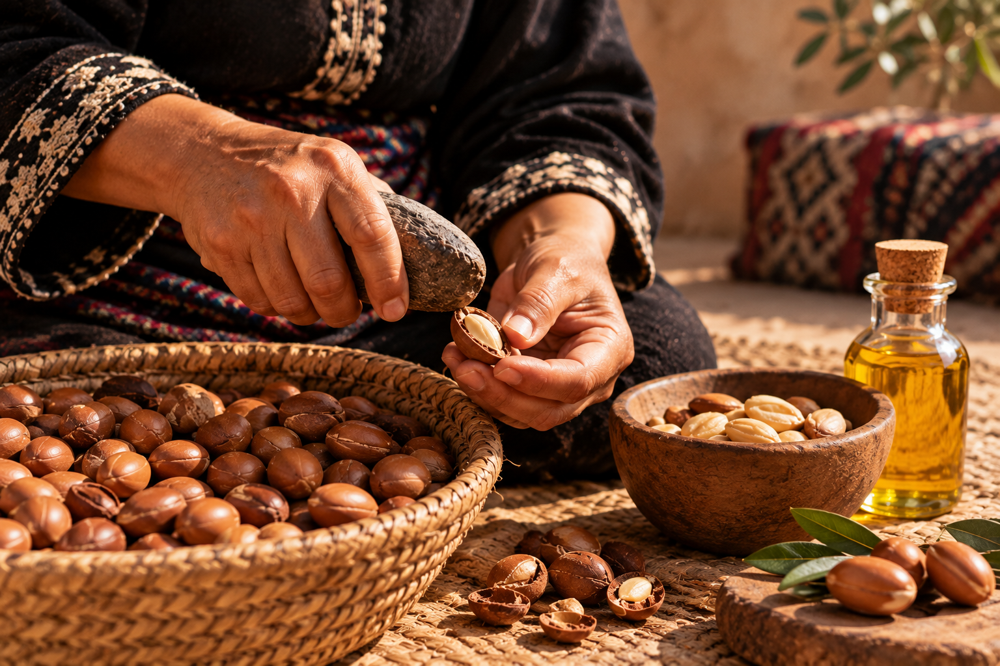
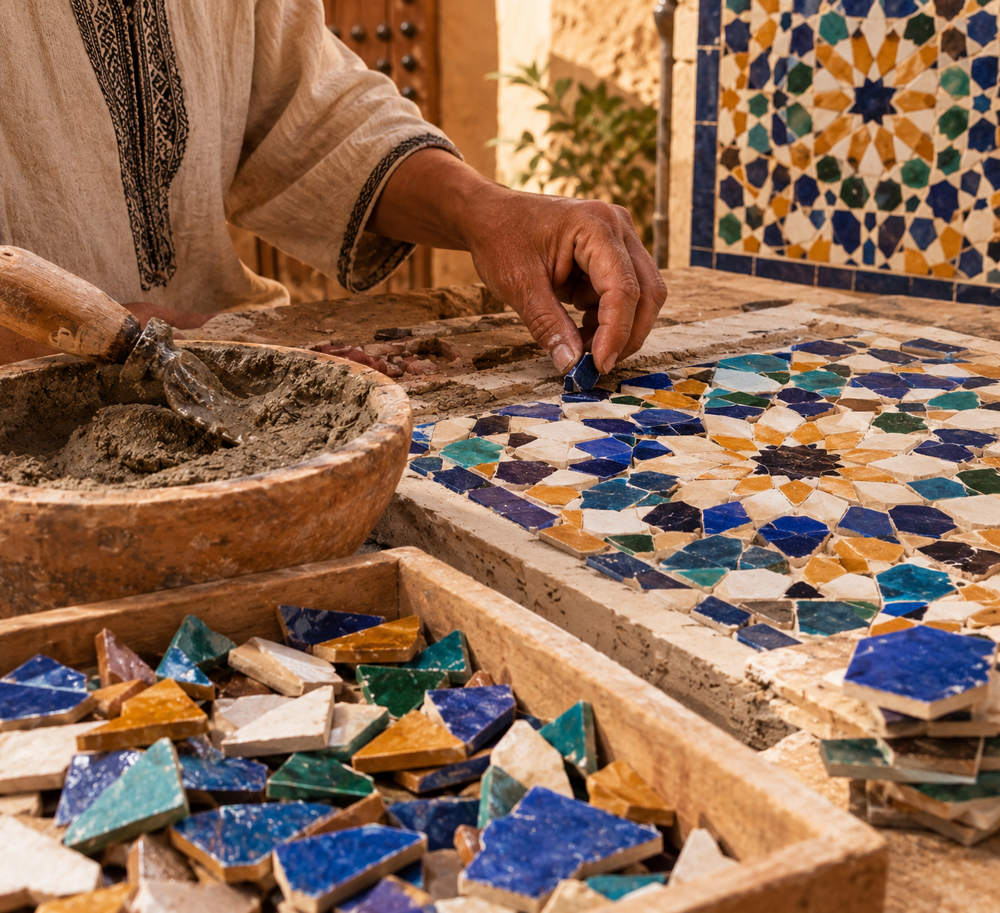
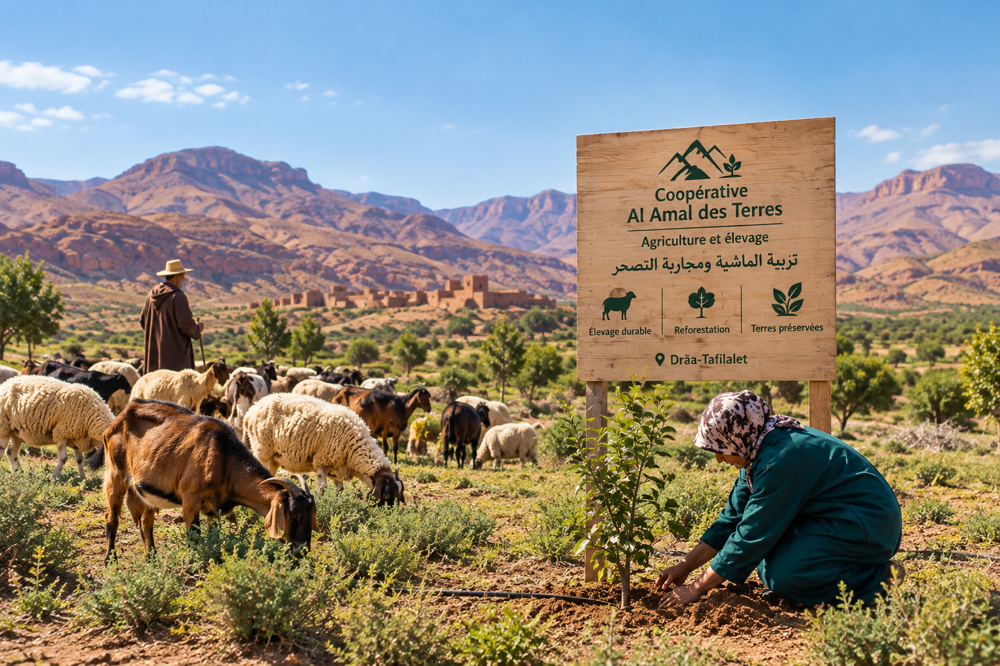
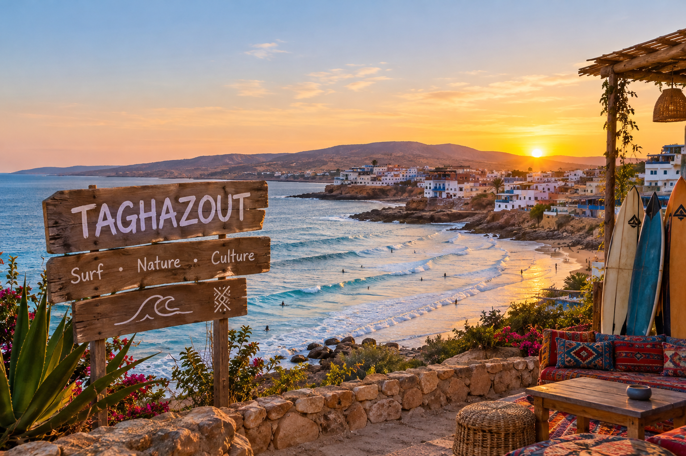
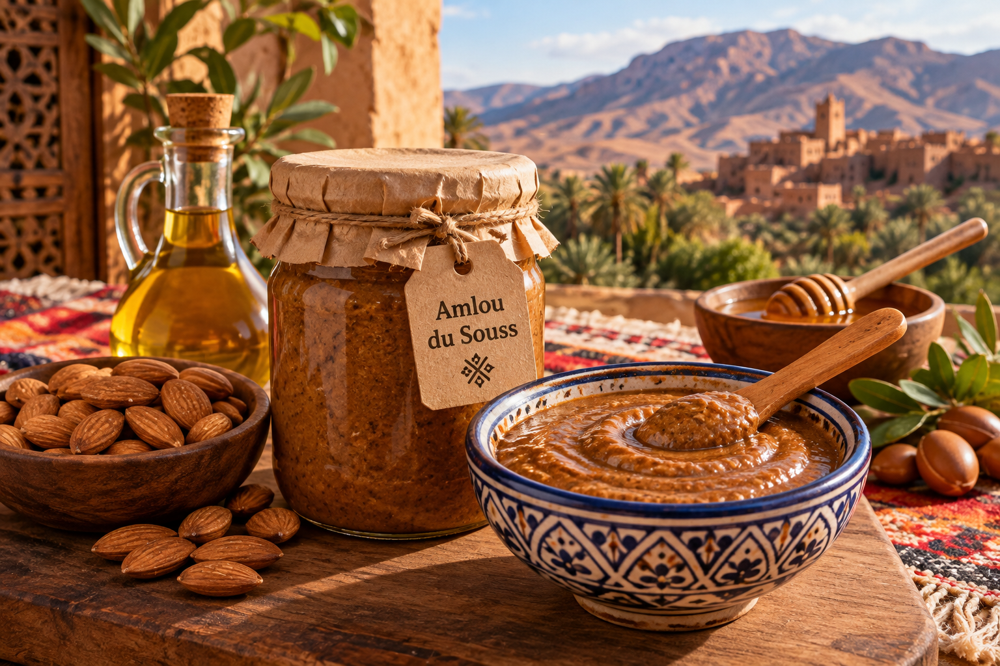
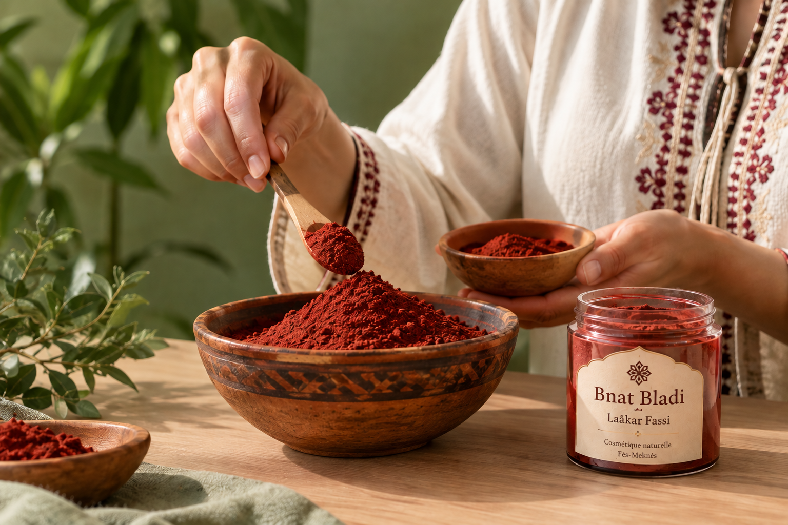
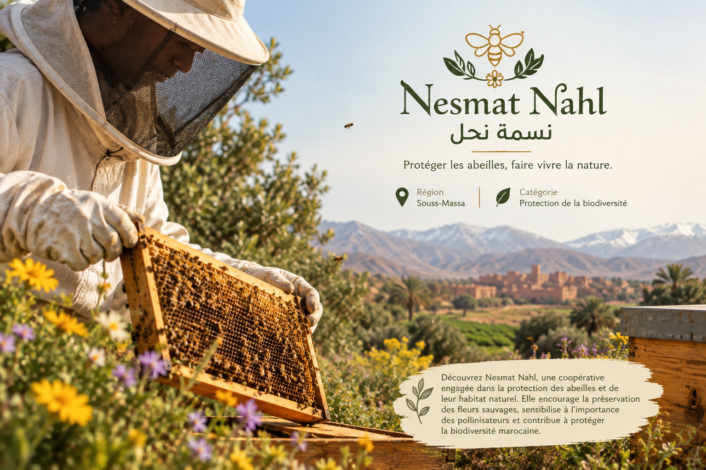

Taawon
Nos coopératives artisanales
Découvrez Taawon, une plateforme qui met en valeur l’artisanat marocain et soutient les coopératives locales. Explorez des créations authentiques, des produits faits à la main et le savoir-faire de nos artisans, tout en contribuant à préserver notre patrimoine culturel.
Selectionner avec Catégorie :
Selectionner avec Région :
Coopérative Fakhar

- Region: Marrakech
- Catégorie: Artisanat
- Description:
Découvrez la beauté de la poterie marocaine faite à la main.
Chaque pièce est décorée avec des motifs traditionnels uniques.
Un savoir-faire artisanal qui préserve le patrimoine marocain.
Tapis Amazighs de l’Atlas

- Region: Souss-massa
- Catégorie: Artisanat
- Description:
Découvrez les tapis amazighs de l’Atlas,
tissés à la main par des artisans passionnés. Chaque tapis
raconte une histoire à travers ses motifs traditionnels, ses couleurs
chaleureuses et son savoir-faire ancestral marocain.
Ayyur d'Argane

- Region: Souss-massa
- Catégorie: Produits du Terroir
- Description:
Découvrez l’huile d’argan marocaine,
extraite traditionnellement des noix d’argan par des coopératives
locales. Riche en savoir-faire ancestral, elle est appréciée pour ses
bienfaits naturels et ses multiples utilisations.
Zellij El fassi

- Region: Fès-Meknes
- Catégorie: Artisanat
- Description:
Découvrez le zellige marocain,
un art traditionnel façonné à la main par des artisans
passionnés. Chaque pièce associe des couleurs éclatantes
et des motifs géométriques uniques, préservant ainsi le riche
patrimoine artisanal de Fès.
Tazrart Coopérative

- Region: Drâa-Tafilalet
- Catégorie: Agriculture
- Description:
Découvrez Tazrart coopérative,
une coopérative engagée dans l’élevage traditionnel
et la lutte contre la désertification. Elle protège
les terres marocaines grâce à un élevage durable et à
la préservation des pâturages.
Atlantique

- Region: Rabat-Salé-Kenitra
- Catégorie: Tourisme
- Description:
Découvrez Atlantique,
une coopérative qui valorise le tourisme durable
et la richesse du patrimoine marocain. Elle propose
des expériences authentiques et des activités en pleine
nature à travers les différentes
régions du Maroc.
Tifawt

- Region: Souss-massa
- Catégorie: Produits du Terroir
- Description:
Découvrez Tifawt,
une coopérative qui prépare un amlou
marocain traditionnel à base d’amandes,
d’huile d’argan et de miel, en valorisant les
saveurs authentiques du Souss.
Bnat Bladi

- Region: Fès-Meknes
- Catégorie: Artisanat
- Description:
Découvrez "Bnat Bladi",
une coopérative qui valorise l’Aâkar Fassi,
un pigment rouge traditionnel marocain utilisé
dans les rituels de beauté. Inspirée du patrimoine
marocain.
Nesmat Nahl

- Region: Béni Mellal-Khénifra
- Catégorie: Apiculture durable
- Description:
Découvrez Nesmat Nahl,
une coopérative engagée dans la protection
des abeilles et de leur habitat naturel. Elle
encourage la préservation des fleurs sauvages,
sensibilise à l’importance des pollinisateurs et
contribue à protéger la biodiversité marocaine.